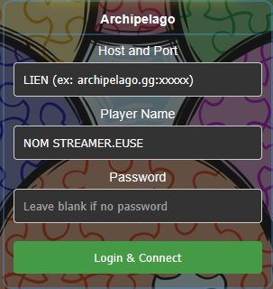
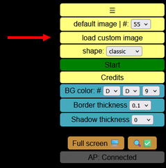
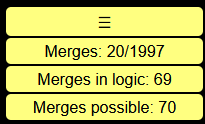

16h - 17h30
Start
Accueil : Blabla + donation goals
Est-ce que tu es prêt à ajouter ton grain de poivre au poivrier ?
Programme définitif du Charystream.
Accueil : Blabla + donation goals
Présentation et explications
Avec streameureuses + viewereuses
Coop à deux
Coop à deux
On se réveille chill, on mange, on fait le point sur l'event.
Speedrun Any% + BossRush% + libre
Donation goals, explications sur l'association, puzzle, ...
Vidéo aléatoire pour vous occuper sans moi
Annonce très spéciale
Avec Monsieur Papy_Grant
Quizz culture G, Guess the Audio, Le Juste Prix
Coop avec pleins de gens ZINZIN
Tout doux... y fait chaud !
Coop à deux
Vidéo aléatoire pour vous occuper sans moi
Découverte avec vous de cette pépite
Tirage au sooooort !
Pour terminer l'event en beauté
Le Poivrier VS le reste du monde
Merci Lorexe pour la création de ce tutoriel
Il s’agit d’un puzzle communautaire multijoueur. En début de partie, vous n’avez pas toutes les pièces : seulement une poignée d’environ 270 pièces.
De nouveaux lots de 100 pièces se débloquent au fur et à mesure que le puzzle avance.
Si vous voyez d’autres pièces bouger, ce n’est pas un fantôme : d’autres personnes jouent en même temps.
Rendez-vous sur la page du jeu, puis connectez-vous avec les informations reçues avec le guide.
Ouvrir le jeuIl n’y a pas besoin de mot de passe : remplissez les champs demandés, puis cliquez sur Login & Connect.

Avant de rejoindre la partie, téléchargez l’image CharyStream qui servira d’image de référence pour le puzzle.
Télécharger l’imageDans le menu de droite du jeu, cliquez sur load custom image, puis sélectionnez l’image CharyStream téléchargée sur votre ordinateur.
Si l’image apparaît correctement à l’écran, vous pouvez rejoindre la partie en cliquant sur le bouton vert Start.

Les pièces se déplacent en maintenant le clic de la souris. Elles se déposent quand vous relâchez le clic.
Tant que vous avez une pièce “en main”, utilisez la molette pour la faire tourner de 90°.
Si deux pièces peuvent s’assembler, elles le feront automatiquement lorsque vous les déposez côte à côte.
En haut à droite, le jeu affiche l’état d’avancement du puzzle.

Exemple : s’il y a 20 assemblages réalisés et 70 assemblages possibles, il reste 50 assemblages à faire.
Le jeu est utilisable sur écran tactile. La différence principale concerne la rotation des pièces.
Quand vous déplacez une pièce avec un doigt, elle peut pivoter à 90° en déplaçant un deuxième doigt sur l’écran.
Coopérez, discutez dans le mini-chat et aidez le Poivrier à venir à bout du puzzle communautaire.
Un événement caritatif en stream au profit de la lutte contre la sclérose en plaques.
CharyStream rassemble des streamer.euse.s autour d’une cause commune : soutenir la lutte contre la sclérose en plaques.
Pendant l’événement, les lives, les activités et les dons permettent de sensibiliser le public, de soutenir la recherche et d’améliorer le quotidien des personnes touchées par la maladie.
Voir le site officielLa sclérose en plaques est une maladie neurologique chronique et invalidante. CharyStream vise à réunir une communauté autour du divertissement tout en donnant de la visibilité à cette pathologie.
L’événement met aussi en avant des témoignages et des activités éducatives pour mieux comprendre la maladie et les réalités vécues par les personnes concernées.
Les dons soutiennent France Sclérose en Plaques, une structure engagée dans la recherche, l’accompagnement des personnes malades et la sensibilisation.
En savoir plus sur France Sclérose en Plaques{kind=link}